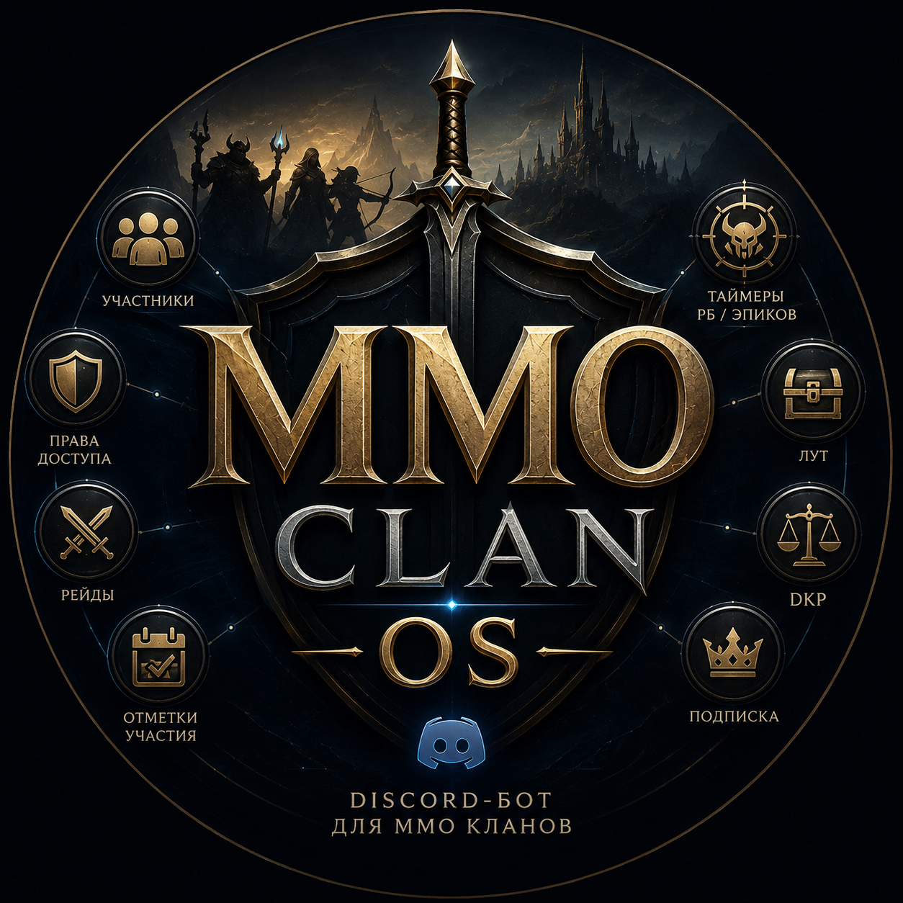
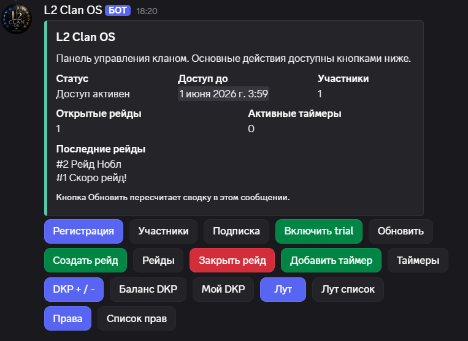

Для лидера
Видно, что происходит в гильдии: кто зарегистрирован, какие рейды открыты, кто ведет DKP/очки и кто имеет права администратора.

MMO Clan OSКроссплатформенный MMO runtime
Платформа для кланов и гильдий в Discord, Telegram и VK: рейды, отметки участия, DKP/очки, лут, роли и контроль доступа. Один игровой профиль игрока может быть связан с несколькими платформами, а бизнес-логика живет в общем core.
Хотите попробовать на своем сообществе? Нажмите «Подключить на бесплатный тест» или напишите владельцу: Discord, Telegram, почта.
Зачем это нужно
В MMORPG сообщество живет в чатах: кто-то в Discord, кто-то в Telegram, кто-то в VK. Без общей системы рейды и учет быстро превращаются в поток сообщений, скриншотов и ручных таблиц.
MMO Clan OS переносит процессы в общий core и дает платформам только роль адаптеров: принять событие, собрать payload, вызвать action и отдать ответ обратно в чат.
Для кого
Видно, что происходит в гильдии: кто зарегистрирован, какие рейды открыты, кто ведет DKP/очки и кто имеет права администратора.
Рейды, таймеры, анонсы, DKP/очки и лут оформляются через формы. Меньше рутины, меньше ошибок, меньше вопросов “куда это писать?”.
Участник открывает панель, регистрирует ник, смотрит рейды, баланс очков и отмечается без изучения набора команд.
Шире одной игры
Не важно, как игра называет сообщество: клан, гильдия, корпа, статик, конста или рейдовая группа. Если есть состав, расписание, боссы, лут и ответственные офицеры, MMO Clan OS закрывает эту рутину внутри привычных чатов.
Бот можно использовать в MMORPG, где есть кланы, гильдии, рейды, осады, боссы, лут и внутренняя система очков.
Планируют события, собирают состав, смотрят отметки участия и фиксируют результат после рейда.
Держат анонсы, таймеры, списки участников и права офицеров в одном управляемом месте.
Ведут баланс, списания и историю выдачи предметов без ручного поиска по старым сообщениям.
Возможности
MMO Clan OS не привязан к одной платформе. Он дает единый рабочий слой для сообщества: кнопки, формы, роли, историю действий и контроль доступа поверх Discord, Telegram и VK.
Основные действия доступны из одной панели: регистрация, рейды, DKP/очки, лут, таймеры, анонсы, подписка и права.
Офицер создает рейд через форму, участники отмечаются кнопками, а анонс и статусы публикуются во всех подключенных чатах платформы.
Начисления, списания и выдача предметов фиксируются в базе, чтобы не терять важные решения после фарма.
Есть роли LEADER, OFFICER, PARTY_LEADER и MEMBER. Лидер сам назначает доступ своим людям.
Один core работает с несколькими чатами и платформами, а данные каждой гильдии или клана хранятся отдельно.
Новая площадка попадает в ожидание. Владелец сервиса одобряет или запрещает заявки через свою панель.
Пример вечера
Обычный прайм можно провести без отдельной таблицы и без постоянного ручного учета в чате.
Через кнопку Создать рейд вводит название и время. Рейд публикуется в подключенных чатах, участники видят его в своей платформе.
Гильдия видит, кто идет, кто опоздает, кто не сможет. Это помогает быстрее собрать состав.
Офицер выбирает участника, указывает предмет и стоимость. Баланс DKP/очков обновляется в базе.
Рейды, выдачи лута и начисления остаются доступными. Не нужно искать решения по старым сообщениям.
Скриншоты
Нажмите на маленький скриншот, чтобы открыть его крупнее. Текущая галерея содержит исторические скриншоты Discord MVP, доменная логика у всех платформ общая.

Бесплатный тест
Быстрее всего стартовать с Discord, затем можно подключать Telegram и VK. Напишите владельцу, чтобы получить тестовый доступ и настройку под ваш формат сообщества.
Откройте invite-ссылку, выберите свой Discord-сервер и добавьте бота. После этого площадка появится в списке заявок.
Лидер или офицер выполняет /setup, затем открывает /panel и назначает права в клане.
Регистрация, рейды, DKP/очки, лут, таймеры и анонсы идут через единые core-действия независимо от платформы.
Роли
Не каждый участник должен управлять DKP/очками или закрывать рейды. Поэтому в боте есть простая модель доступа.
Назначает права, управляет панелью гильдии и может давать доступ офицерам.
Ведет рейды, таймеры, анонсы, DKP/очки и лут. Это рабочая роль для тех, кто помогает управлять праймами.
Смотрит списки, баланс DKP/очков, рейды и отмечается на событиях.
Контроль доступа
Даже если invite-ссылка попадет наружу, новая площадка сначала получает статус ожидания. Команды гильдии не работают, пока владелец сервиса не одобрит заявку.
Доступ можно выдать на trial или до конкретной даты. Когда срок пройдет, рабочие функции автоматически блокируются до продления.
Это удобно, если платформа используется как сервис для нескольких MMORPG-сообществ: каждый клан изолирован, а владелец сервиса контролирует заявки и сроки через отдельную панель.
FAQ
Да. Каждое сообщество изолировано по своему `clanId`, чаты и платформы подключаются как отдельные адаптеры.
Почти нет. Главные действия вынесены в кнопки и формы: регистрация, рейды, DKP/очки, лут, таймеры, анонсы и права.
Лидер или офицер назначает роли через панель: лидер, офицер, пати-лидер, участник.
Команды гильдии перестанут работать, пока владелец сервиса не продлит срок доступа.
Бесплатный тест
Зайдите в демо Discord, посмотрите логику, а затем подключим ваш клан с учетом нужной терминологии: клан, гильдия, корпа, статик или конста.